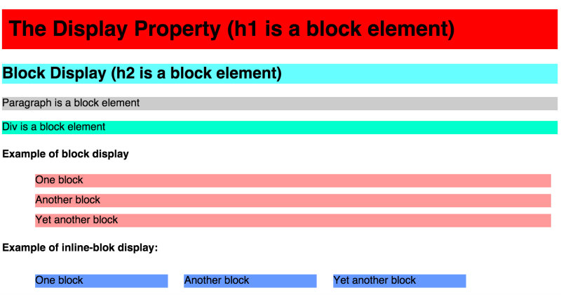
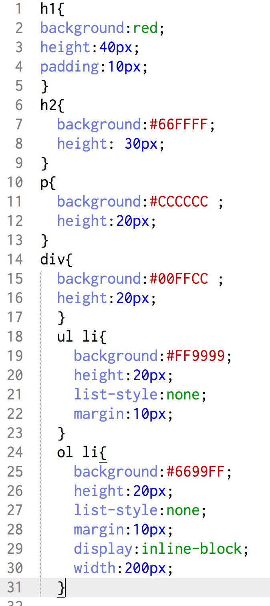

For my blog this week I chose the topic that gave me some trouble when working on my website.When reading about them, they seemed pretty non-threatening, just two other CSS properties that went in my imaginary toolbox. But they proved much naughtier when I tried to actually use them in practice. So here it is, my tale of the battle with the displays.
Block Display is the default display for many of the html elements (block-level elements) such as div, p, h1-h6, header, footer, etc . Imagine that each html block element is surrounded by a box. The box of the block line elements occupies its own row, for the full length of the screen. Even if your paragraph is only two letters long, it will still redeem the full lenght of the screen for itself.
Inline Display is the default display for the inline elements such as em, strong, b. These elements don't add a new row to the layout and are usually included in a paragraph or other block-level elements. Although, the default display of these elements is inline we can assign them a block display and they they will behave like block elements.
Inline-block Display. What if we wanted to make block elements behave like inline elements you ask? Why not just assign them a display:inline property? Because that would be too easy I say. It might work in some cases, but for two paragraphs for example it just merges them together and treats them like one paragraph. Here comes inline-block to save the day. This property allows block elements to display inline while maintaining their block properties. You can resize them, add margins and paddings and much more.
Below, I included examples of the block and inline-block display and the CSS code I used to create them. If you are a visual learner, like me, that will help you more than my technical prose.

The CSS code I used for these examples is below
